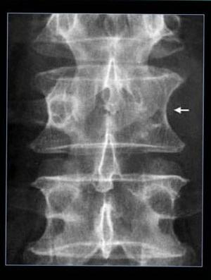
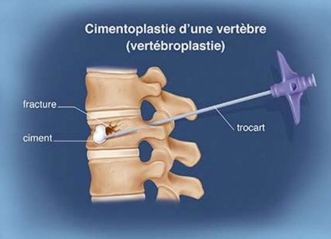
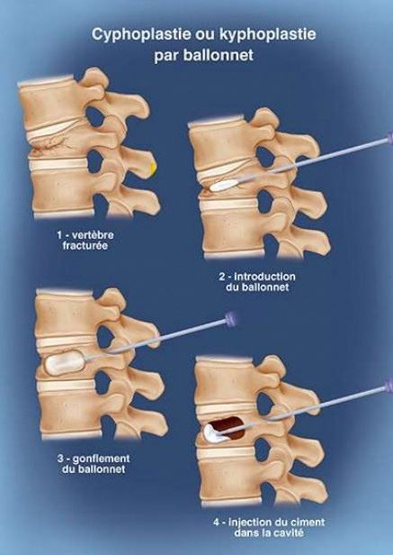
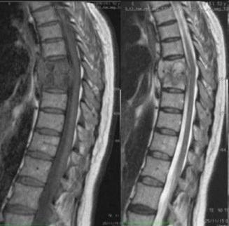
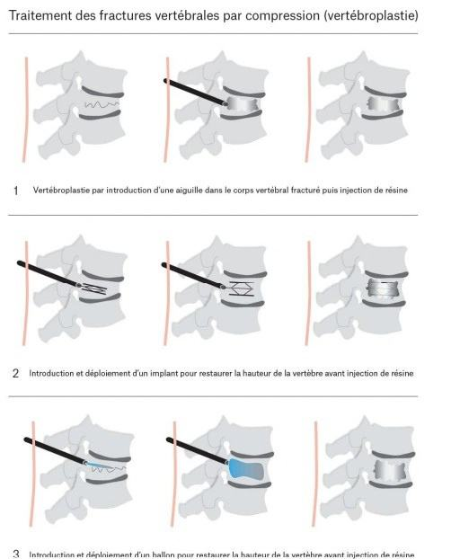
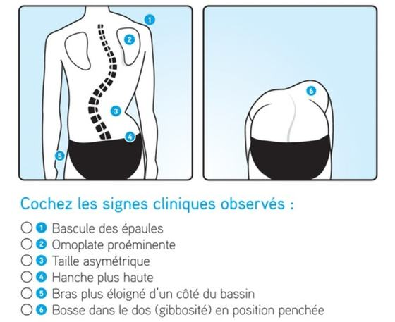
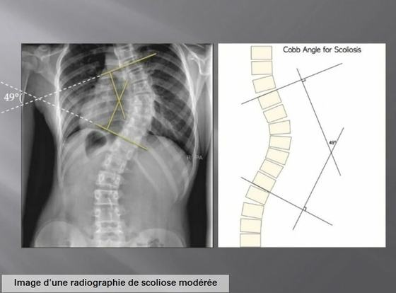
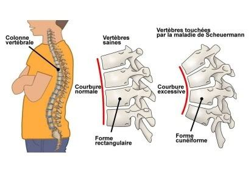
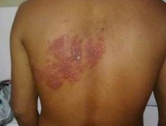
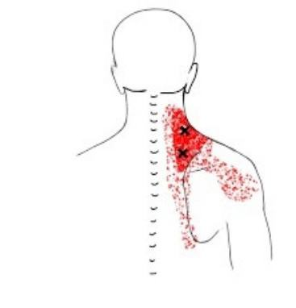

Dorsalgies — généralités
Origines et types
Dorsalgies — généralités
Fréquence
Plus rares que les cervicalgies et les lombalgies.
Origines
Rachidiennes et extra-rachidiennes.
Particularités d'une origine rachidienne
1) DLR à la palpation vertébrale · 2) DLR augmentant lors des mouvements du rachis · 3) DLR locale irradiant ou non le long d'un nerf spinal · 4) pas de condition autre associée.
Dorsalgies symptomatiques rachidiennes
| Type | Section | Point clé |
|---|---|---|
| Tumorale | Tumorales | Myélome multiple, métastase osseuse, tumeur bénigne |
| Infectieuse | Infectieuses | Spondylodiscite |
| Maladie inflammatoire | — | Abordé dans un autre chapitre |
| Ostéoporotique | Ostéoporotiques | Fracture de corps vertébral |
| Scoliotique | Scoliose & Scheuermann | Gibbosité |
| Virale | Zona | Réactivation du virus varicelle-zona |
| Arthrose dorsale | — | Abordé dans un autre chapitre |
| Maladie de Scheuermann | Scoliose & Scheuermann | Trouble de croissance, adolescent |
| Musculaire | Musculaires | Syndrome de l'élévateur de la scapula |
Source : « Sémiologie II — Dorsalgies », Maude Riendeau — 3e année, IEOQ 2026-2027.
Dorsalgies tumorales
Myélome, métastase osseuse, tumeur bénigne
Dorsalgies tumorales : myélome multiple · métastase osseuse · tumeur bénigne.
Dorsalgies malignes — myélome & métastase osseuse
Définition (myélome) : « cancer du sang associé au comportement anormal et à la croissance non contrôlée des plasmocytes » (type de globule blanc).
Mécanisme
Les cellules cancéreuses empêchent les ostéoblastes de faire leur travail et accélèrent celui des ostéoclastes.
Épidémiologie
En général chez les + de 50 ans.
Pronostic
INCURABLE.
Signes et symptômes
Signes
Ostéopénie (entre normal et ostéoporose) · lésions lytiques → vertèbre borgne · hypercalcémie · perte de poids · signes neuro possibles (périphérique et/ou central).
Symptômes
DLR Tx et souvent Lx, aux côtes et aux hanches · DLR augmente aux mouvements et diminue en décubitus · peut réveiller la nuit · peu ou pas de soulagement, voire augmente avec le temps · anergie · perte d'appétit.
Origine des DLR dorsales
Lésions osseuses · fractures · fractures par tassement ou amincissement du tissu osseux · cyphose secondaire à l'effondrement des disques vertébraux.

🚩 RED FLAG — Une DLR dorsale existante qui s'aggrave du jour au lendemain → soupçonner une fracture. Dorsalgie + ATCD de cancer → référer.
Diagnostic
Radiographie
Lésion lytique (visible si + de 30 % du cortex de l'os est touché) · signe de la vertèbre borgne.
Tomographie
Détecte la propagation du myélome à l'extérieur de l'os.
Scintigraphie osseuse
Recherche de zones à distance possiblement touchées.
IRM
Dépistage précoce des cellules myélomateuses dans la moelle osseuse · compression nerveuse / de la moelle épinière.
Prise de sang
Hypercalcémie · marqueurs d'inflammation.
Traitement
Pharmacologie
Bisphosphonates (protecteur osseux) · anti-douleur · cannabinoïdes · AINS à éviter (même Motrin et Advil !) : risque d'accroître les dommages aux reins → référer au pharmacien.
Autres
Chimiothérapie / radiothérapie · blocs nerveux (infiltration) · corset · physio / ostéo / acupuncture / massothérapie / psychologue · yoga doux.
Chirurgie
Vertébroplastie percutanée · cyphoplastie par ballonnet.


En ostéopathie : respecter les recommandations médicales · respecter la DLR et les limites de la personne · aucun thrust ni « correction articulaire » · respecter ses propres limites et référer au besoin. Nous pouvons aider pour la gestion de la DLR et le maintien de la mobilité.
Tumeur bénigne
Problématique
Surtout si elle prend de l'espace et comprime les structures autour. Ex. : ostéome, neurinome, méningiome…
S&S
DLR locale · DLR nocturne · peut devenir constante · S&S neuro possibles · état général stable.
Diagnostic
TDM.
Traitement
Conservateur / pharmacologique · suivi de l'évolution de la masse · chirurgie au besoin.
Source : « Sémiologie II — Dorsalgies », Maude Riendeau — 3e année, IEOQ 2026-2027.
Dorsalgies infectieuses
Spondylodiscite
Spondylodiscite
Définition : « inflammation ou infection d'une ou des vertèbres et des disques intervertébraux voisins. »
Causes
Germe pyogène (staphylocoques) · mycobactérie (spondylodiscites « tuberculeuses ») · salmonelles · brucelles · mycose (ex. Candida albicans).
Épidémiologie
Plutôt rare, MAIS : hommes > femmes · tous les âges · touche les Lx (58 %), les Tx (30 %) et les Cx (11 %).
Mécanismes & facteurs favorisants
Septicémie
1) Porte d'entrée à distance (infection urinaire / pulmonaire (dont tuberculose) / dentaire / cutanée / injection intraveineuse…) → 2) l'infection migre par voie sanguine jusqu'à une ou plusieurs vertèbres.
Exposition directe
Chirurgie de la colonne · ponction lombaire / épidurale.
Facteurs favorisants
Diabète · traitement prolongé de cortisone · immunosuppression · alcoolisme chronique · cancer · cirrhose hépatique · insuffisance rénale chronique.
Signes et symptômes
Signes
Fièvre · AEG (altération de l'état général) · atteintes neurologiques périphériques et médullaires possibles.
Symptômes
Raideur rachidienne +++ · DLR inflammatoire localisée · DLR qui s'aggrave rapidement sans soulagement.

Diagnostic
Prise de sang
Présence de microbes · marqueurs d'inflammation.
Ponction-biopsie rachidienne
—
Radiographie
Affaissement du disque · géodes · absence de condensation / hyperdensité osseuse.
Autres imageries
Tomodensitométrie · scintigraphie osseuse · IRM.
Traitement — urgence thérapeutique
Pharmacologie
Antibiotiques IV, puis oraux pour quelques semaines.
Chirurgie
Laminectomie décompressive si compression médullaire · ponction de l'abcès.
Pronostic
Bon pronostic en général. 5-10 jours → gérer l'infection ; ± 3 mois → gérer la DLR mécanique vertébrale.
Séquelles possibles
Bloc vertébral (soudure de 2 vertèbres) · changements posturaux (augmentation de la cyphose) · atteintes neuro permanentes.
🚩 RED FLAG — Risque de compression nerveuse ou de la moelle épinière. Si abcès : peut détruire les nerfs. Risque de déformations rachidiennes et de séquelles neuro. Dans tous les cas → prise en charge urgente.
Dorsalgie secondaire à une maladie inflammatoire : abordé dans un autre chapitre.
Source : « Sémiologie II — Dorsalgies », Maude Riendeau — 3e année, IEOQ 2026-2027.
Dorsalgies ostéoporotiques
Fracture vertébrale, tableau clinique
L'ostéoporose est abordée ici par rapport aux spécificités liées aux dorsalgies.
Tableau clinique classique
Terrain
Femmes > hommes · individu ectomorphe (élancé / gracile / longiligne) · femme post-ménopausée · individu sédentaire · traitement de corticostéroïdes par voie orale prolongé.
Niveau typique
Touche typiquement T7-T8.
Mécanismes
Impact vertical (simple chute sur les fesses) · parfois spontané · épisode de toux +++ · effort banal.
Problématique, S&S, diagnostic, traitement
Problématique
Les fractures de corps vertébraux sont les plus fréquentes des fractures secondaires à l'ostéoporose.
S&S
DLR mécanique aiguë · S&S neuro possibles · peut être asymptomatique.
Diagnostic
Radiographie · TDM · IRM.
Traitement
AINS / anti-douleur / relaxant musculaire · physio / ostéo / acupuncture · parfois corset · chirurgie rare · traitement à long terme de l'ostéoporose.

Source : « Sémiologie II — Dorsalgies », Maude Riendeau — 3e année, IEOQ 2026-2027.
Dorsalgies scoliotiques & maladie de Scheuermann
Gibbosité, angles de Cobb, halo, croissance
Dorsalgies scoliotiques
Causes
Idiopathique · congénitale · neuromusculaire · associée à un syndrome ou une maladie.
Chez la jeune adolescente
Découverte par hasard à l'enfance par les parents ou les professionnels de la santé.
Chez l'adulte
Découverte due à des DLR locales + tensions musculaires.
Signe pathognomonique
Gibbosité à la flexion antérieure du tronc.

Traitement selon l'angle
| Angle de Cobb | Approche |
|---|---|
| 15-25° | Observation |
| 20-25° | Corset |
| 25-45° | Corset + thérapie manuelle |
| + 45° | Correction difficile avec corset → chirurgie |
Équipe
Physio / ergo / ostéo.
Innovation — traction par halo
Pour la scoliose grave : anneaux métalliques (halo) fixés chirurgicalement au crâne · système de poulies permettant la traction · hospitalisation 3-8 semaines · fusion spinale pour stabiliser une fois le traitement terminé · avantage : moins de risque d'endommager nerfs et tissus mous lors de la chirurgie.

Maladie de Scheuermann
Définition
Trouble de croissance osseuse des corps vertébraux : le bord antérieur se développe plus lentement que le bord postérieur.
Épidémiologie
Apparaît à l'enfance (~11-13 ans) et évolue pendant toute la croissance · souvent découvert par les parents (posture voûtée) · l'enfant peut se plaindre de DLR dorsale.
DLR lombaire
Possible : augmentation de la lordose lombaire secondaire à l'augmentation de la cyphose dorsale.
Diagnostic (radiographie)
Aspect feuilleté des corps vertébraux sur plusieurs thoraciques · diminution de la hauteur du corps vertébral antérieur sur plusieurs niveaux.
Traitement
Parfois aucun · corset lombaire · physio / ergo / ostéo · chirurgie rare (fusion vertébrale, traction par halo).
À l'âge adulte
Stabilisation ; S&S / DLR de compensation peuvent s'installer.

Source : « Sémiologie II — Dorsalgies », Maude Riendeau — 3e année, IEOQ 2026-2027.
Dorsalgies virales — zona
Varicelle-zona, dermatome
Zona
Définition : « maladie causée par la réactivation du virus varicelle-zona. »
Mécanisme
Le virus reste latent dans une ou des racines dorsales des ganglions nerveux jusqu'à la réactivation.
Risque de réactivation
Augmente avec : âge (> 50 ans) · immunodépression · stress intense.
Transmission
Une personne atteinte de zona peut transmettre la varicelle, mais pas le zona. La varicelle ne peut pas transmettre le zona.
Signes et symptômes
Début
DLR / sensibilité / engourdissement ou démangeaison le long du dermatome.
Ensuite
Vésicules remplies de liquide → DLR intense +++ · éruption suivant 1 à 3 dermatomes.
Contagiosité
Jusqu'à ce que les lésions soient croûteuses (± 1 semaine).

Diagnostic, traitement, complications
Diagnostic
Facile une fois l'éruption en place · prélèvement possible pour identifier le virus.
Vaccin
Délai de 12 mois post-éruption.
Traitement
Antiviraux (mieux dans les 72 h) · acupuncture.
Complications
Névralgie persistante · surinfection bactérienne · paralysie · pneumonie · encéphalite · atteinte de la vue / perte auditive · AVC.
Source : « Sémiologie II — Dorsalgies », Maude Riendeau — 3e année, IEOQ 2026-2027.
Dorsalgies musculaires
Syndrome de l'élévateur de la scapula
Dorsalgies musculaires — tableau typique
Terrain
Femmes > hommes · semble influencé par le stress, l'anxiété et les mauvaises postures.
Présentation
DLR interscapulaire haute · sensation de « point » près de la scapula · peut monter vers le cou et descendre en dorso-lombaire.
Diagnostic
Essentiellement clinique · radiographie = normale · prise de sang = normale.
Syndrome de l'élévateur de la scapula
Clinique
DLR déclenchée à la palpation et par les mauvaises postures (ergonomie de bureau, parentalité…).
Traitement
Chaleur · physio / ostéo / acupuncture · parfois infiltration de cortisone et/ou BOTOX.

Bibliographie du cours : article « Spondylodiscite chez l'adulte » (DOI 10.53738/REVMED.2019.15.666.1818) · Association pulmonaire du Québec · Dictionnaire illustré des termes de médecine · Institut national du cancer (France) · Larousse · Shriners (traction par halo) · MSSS du Québec · Myélome Canada · Netter · OPPQ · Radiopaedia · Société canadienne du cancer · Spinal Technology.
Source : « Sémiologie II — Dorsalgies », Maude Riendeau — 3e année, IEOQ 2026-2027.